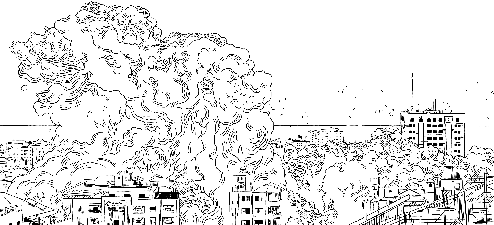

The mutilated fatesof Gaza
The Palestinian children forever scarred by warPalestinian childrenForever scarredby war
A story by · Drawings by .Story byDrawings by


SCROLL TO ENTER THE STORY
The Palestinian children forever scarred by warPalestinian childrenForever scarredby war
A story by · Drawings by .Story byDrawings by

SCROLL TO ENTER THE STORY